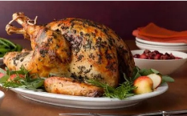
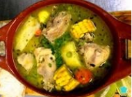
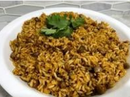

Platillos clasicos navideños
--------------------
Pavo relleno: Pavo asado relleno de arroz, pasas y frutas, servido con salsa de jengibre y piñón.
Sancocho: Un caldo espeso y rico hecho con carne de siete tipos de animales (cerdo, vaca, pollo, chivo, etc.), hierbas, vegetales, plátano y especias.
Arroz Blanco: Un plato básico en la cocina dominicana, hecho con arroz blanco, especias y condimentos.
Habichuelas Guisadas: Frijoles cocidos con especias y condimentos, a menudo servidos con carne o pescado.
Moro de Guandules: Un plato de origen español que se ha adaptado en la gastronomía dominicana, preparado con arroz y guandules, y condimentado con ajíes, verduras, ajo, sopita, pimienta y orégano.
Ensalada Rusa: Un plato de origen ruso que se ha adaptado en la gastronomía dominicana, preparado con papas, zanahorias, remolacha, huevos cocidos, mayonesa, vinagre y cebolla.

Pasteles en Hoja: Un plato típico dominicano que se prepara con plátanos, yautía, auyama, ñame y otros tubérculos, rellenos de carne molida y condimentados con especias y hierbas.

Frutas Secas y Nueces: Platos de frutas secas y nueces que se suelen servir como aperitivo o postre, incluyendo manzanas, pasas, uvas y gomitas.